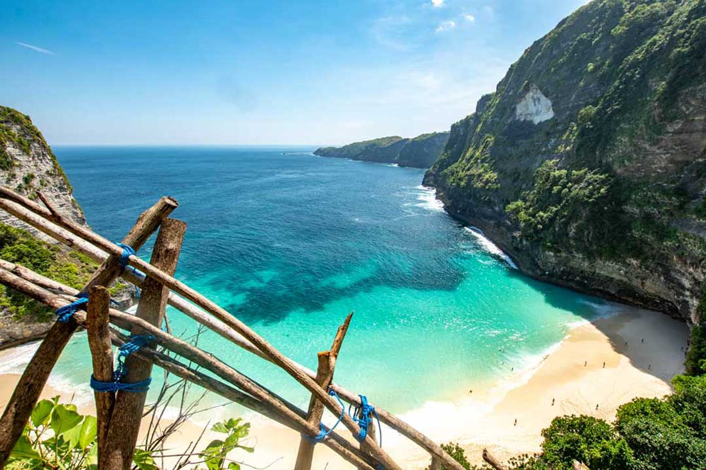
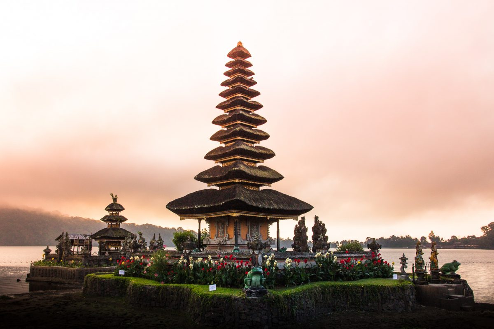
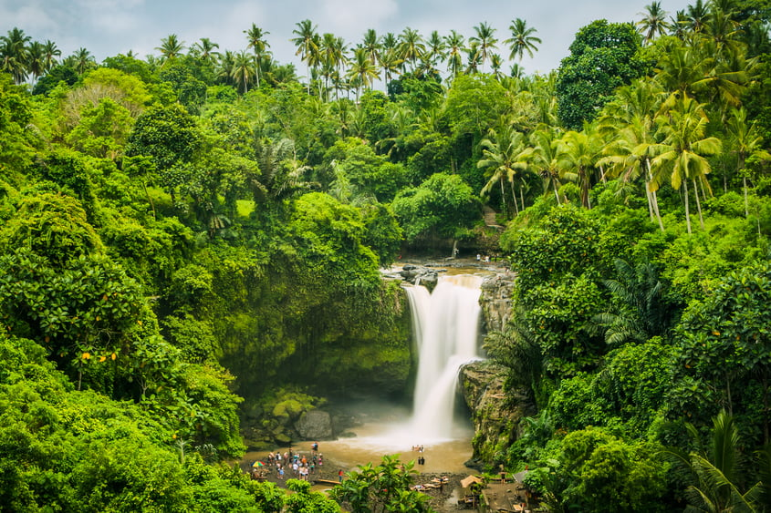
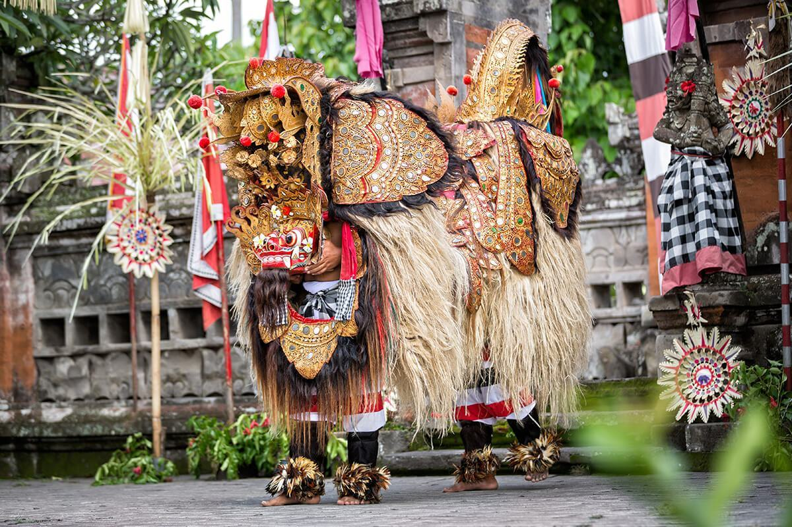
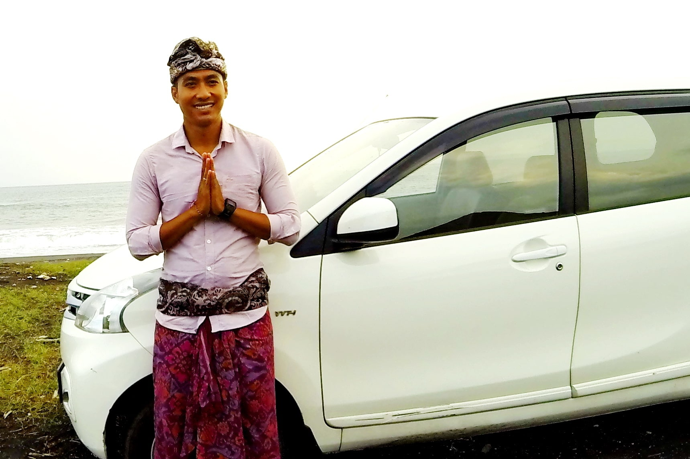
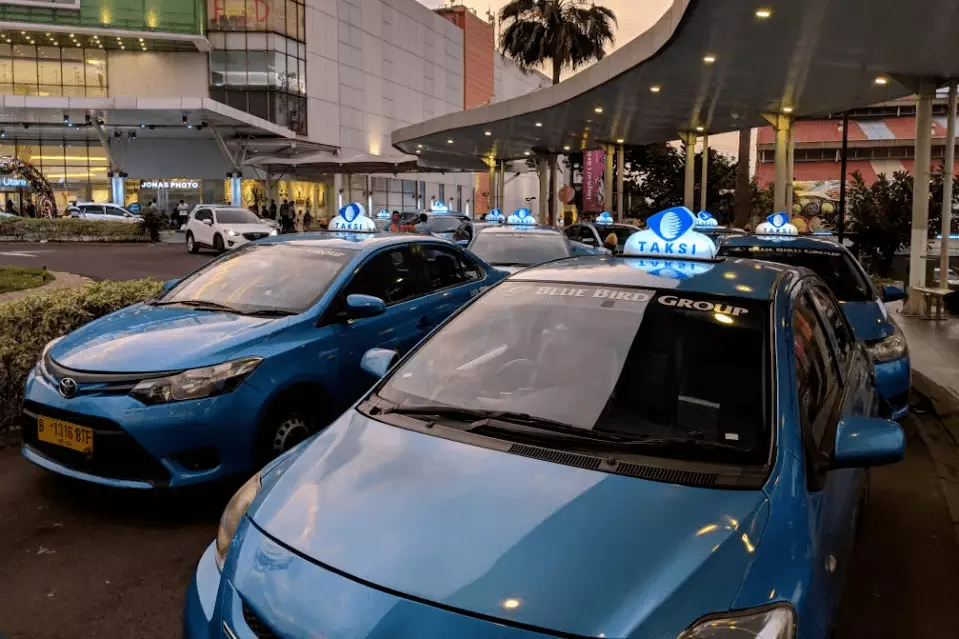
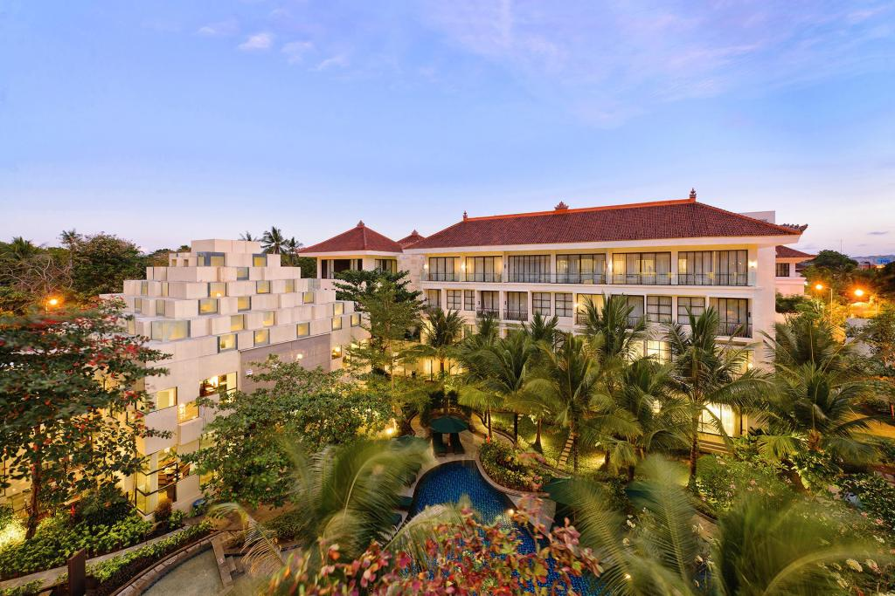
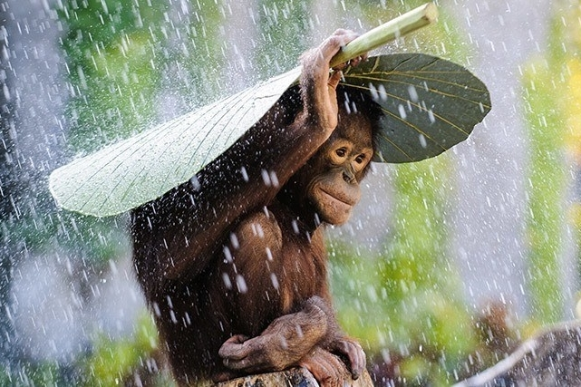

| Vacation at Bali | Ryan Scarbrough | |||||||||||||||||||||||||||||||||||||||||||||||||||||||||||||||||
|---|---|---|---|---|---|---|---|---|---|---|---|---|---|---|---|---|---|---|---|---|---|---|---|---|---|---|---|---|---|---|---|---|---|---|---|---|---|---|---|---|---|---|---|---|---|---|---|---|---|---|---|---|---|---|---|---|---|---|---|---|---|---|---|---|---|---|
Why go?The Indonesian island of Bali is well-loved by many travellers. Within you'll find jungles filled with temples, tropical beaches, diverse landscapes with mountainous terrains, a deeply spiritual and unique culture, towns brimming with nightlife, and an enormous range of accommodations for everyone. |
||||||||||||||||||||||||||||||||||||||||||||||||||||||||||||||||||
SightseeingDespite the commotion and tumult of the main tourist areas, the island is abundant in natural beauty, with adventures for every kind of traveler. Surfers come for the massive swells, hikers can journey up jungly volcanic summits to misty waterfalls, and cyclists can ride through lush landscapes abound with rice terraces and traditional villages. Here are some common sights you'll come across while visiting:

BeachesThe never-ending list of stunning beaches is no doubt the most obvious reason to visit this tropical island. Each beach has its own appeal, from soft white sand and rocky cliffs to plentiful of water sports and diving. From the mainstream Kuta and Nusa Dua beaches to hidden, remote beaches away from the crowds, there’s a beach to match your needs and every mood.

Religious ScenesThe Balinese are spiritual people, mainly Hindus, and have many beautiful temples at which they pray. Temple tours are especially popular among tourists, not only for the spiritual value, but also for cultural appreciation and aesthetic pleasure. From exalted sea temples overlooking the ocean waves to soul-soothing temples up on the mountains, Bali’s temples are something special.

Many Kinds of Natural BeautyBeyond stunning beaches and mystical temples, Bali has almost every kind of natural beauty. Spectacular mountainous areas with lush flora, scenic lakes, striking waterfalls, awe-inspiring rice fields, flower gardens, sacred rivers and hidden canyons all make up the island’s scenery. There are countless natural views that emanate peace and serenity. |
||||||||||||||||||||||||||||||||||||||||||||||||||||||||||||||||||
CultureBalinese culture is a mix of Balinese Hindu-Buddhist religion and Balinese customs. It is perhaps most known for its dance, drama and sculpture. Balinese Hinduists also believe in the power of nature, that each element is influenced by spirits. Spirits and ancestors are very highly regarded, which is why there are always locals making rituals and offerings every day.

Music, drama, and costumes become an extravagant sightseeing during the frequent festivities. There are rites of passage for many milestones in life, celebrating birth, children’s ages, marriage, death, and rebirth. On any given day, you'll see the local people in traditional dress celebrating an occasion. Balinese traditional philosophy is called "Tri Hita Karana." Which means that there are three ways to reach spiritual and physical well-being: harmony between people, harmony between people and nature, and harmony between people and God. |
||||||||||||||||||||||||||||||||||||||||||||||||||||||||||||||||||
TransportationBali has been a major tourist destination for many years. The island can be reached quite easily from almost any place in the world. Many airlines offer direct flights or take you to Bali with just one-stop flights. Bali is also a great hub to other destinations, and many excellent carriers provide cheap flight tickets to almost anywhere in the region. As for travel within Bali, here's what we recommend:

Renting a DriverIf you want to discover the island and the many beautiful wonders of Bali in an efficient and comfortable way, then we would advise to rent a car or minibus with a driver. Prices in Bali for car rentals are rather cheap compared to other holiday destinations – around 36 USD a day – and particularly when you hire with a driver. It is possible to rent a car or scooter without a driver and drive on your own (you'll need an international driving license), but it’s not much cheaper. And, Bali is “very dynamic”, with many difficult roads, not many road signs, and a driving culture that is often described as “intuitive” and chaotic. Be sure to get a car with a driver if you're not up to it.

Finding a TaxiAn alternative if you don't need a car for the entire day is Blue Bird taxis. They have earned a reputation for being honest dealers in the often-corrupt taxi industry. They also have their own mobile app. You'll need to register your name and cell phone number initially, but after that's done, you can summon a Blue Bird taxi as you please. Always make sure to ask the driver to repeat the destination for you and to turn on the meter at the beginning of the trip. If you do this then you should be fine while traveling the tropical island. |
||||||||||||||||||||||||||||||||||||||||||||||||||||||||||||||||||
AccommodationsIn Bali you can find everything from basic guest houses run by friendly Balinese families, to luxurious beach resorts, and privately-serviced beachfront villas with a driver and a cook. Accommodation is comparably cheap and Bali’s high level of service and the friendliness of staff are well known. Beautiful villas are often only priced between 25 USD to 50 USD a night per person.

Travelers can dive into the busy social scene in popular areas or enjoy an exclusive getaway in the boutique hotels, tranquil private villas, and vacation rental properties found all over the island. Backpackers will be surprised by the clean, relaxing accommodation available on a tight budget, while those who want luxury can live like royalty at a very reasonable price. |
||||||||||||||||||||||||||||||||||||||||||||||||||||||||||||||||||
WeatherBali is located about 8 degrees south of the equator. Therefore, you can expect a tropical, warm and humid climate all year round – with two main distinctive seasons: Dry Season and Rainy Season.

For many reasons, the best time to come to Bali is April, May, June and September. It’s still the dry season, it’s slightly less humid, and room prices and villa rentals can be 30-50% cheaper than during the popular season (July/August). Many shops offer sales and promotions, restaurants are less crowded in those mid-season months, and in general, Bali is a bit more relaxed. Here's some general weather info for each of the months:
|
||||||||||||||||||||||||||||||||||||||||||||||||||||||||||||||||||